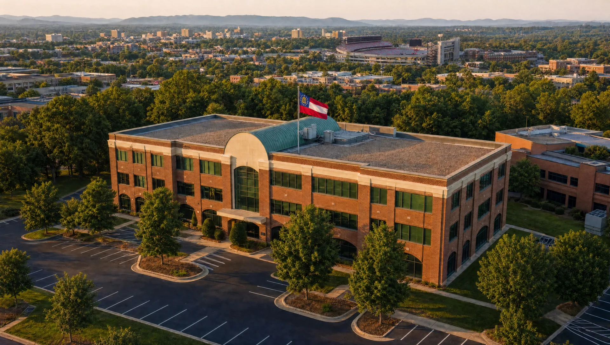
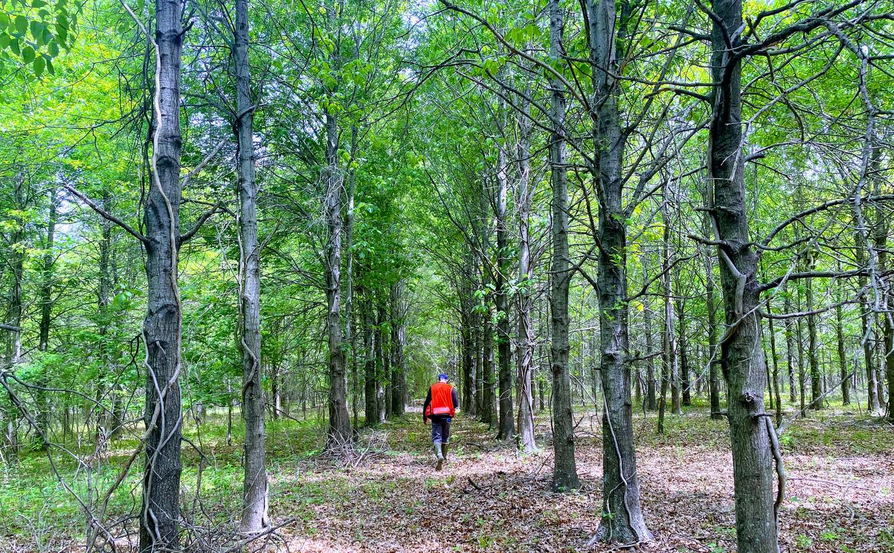
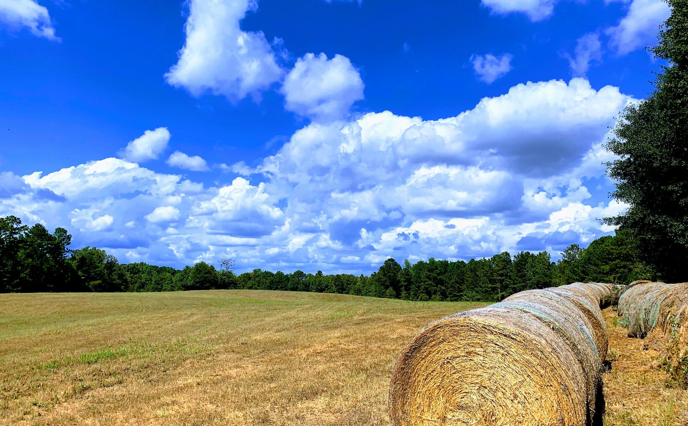
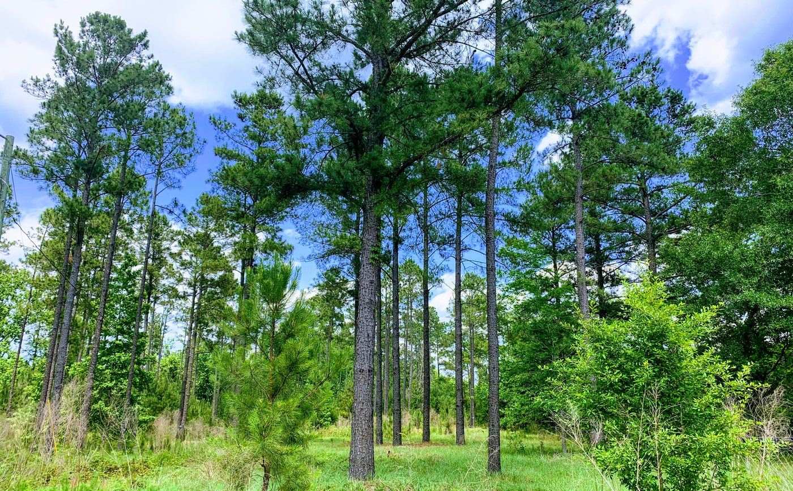
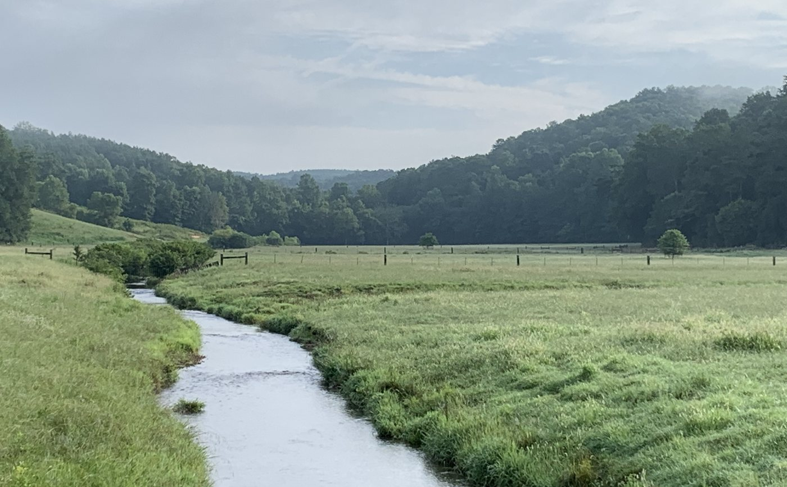
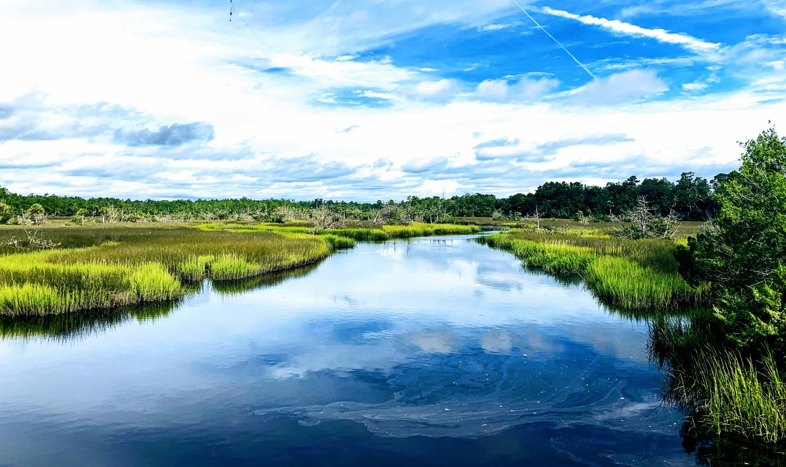
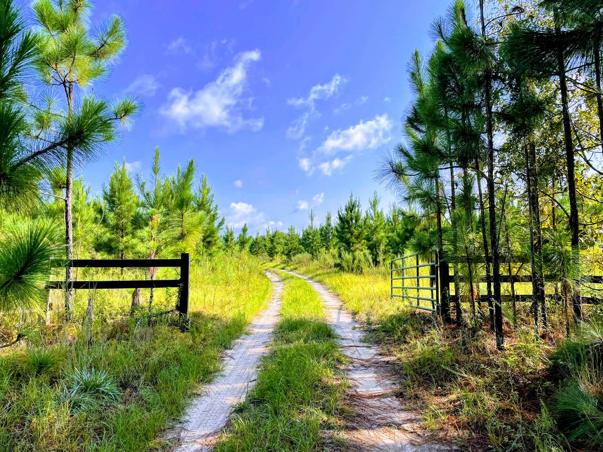

Sales & Leasing
Expertise to maximize your investment goals across all classes of commercial property. Brokerage specialties include Agricultural, Timberland, Office, Retail, Industrial and Special Use.
Get in touch
…from acquisition throughout ownership to disposition — whether a homesite, commercial building or a thousand-acre timber investment.
Maps, acreage and pricing for every tract we have listed.
View all 17 propertiesLoading the map…
Pins are approximate. Browse all listings →
Eight service lines cover a property from acquisition through ownership to disposition — for a 10-acre homesite, commercial building or a thousand-acre timber investment.




Expertise to maximize your investment goals across all classes of commercial property. Brokerage specialties include Agricultural, Timberland, Office, Retail, Industrial and Special Use.
Get in touchA partnership built on your specific needs and expectations. We implement programs on an individual basis that minimize problems and maximize returns.
Get in touchOverseeing the accounting, administrative and legal concerns associated with every lease in a real estate portfolio.
Get in touchAll aspects of forestry services from timber inventory to prescribed burning and wildlife management.
Get in touchSeasoned team members prioritize client goals and deliver projects on time and on budget — from ground-up developments to tenant improvements.
Get in touchDay-to-day operations of a property, including facilities management, lease administration and financial accounting.
Get in touchAll accounting of property income, expenses, taxes and insurance, with monthly reconciliation plus quarterly and annual reporting.
Get in touchOur resident foresters can design a custom plan whether you own a small family property or a thousand-acre tract.
Get in touch
Timber cruise, comparable sales, highest-and-best-use — a proper valuation before you ever list.
Request a ValuationBuying, selling or just weighing options on a family tract — send us the details and the right person will get back to you.

Building 200 sits back from the road — call ahead at 706‑353‑3900 if you're visiting. Open in Google Maps ↗